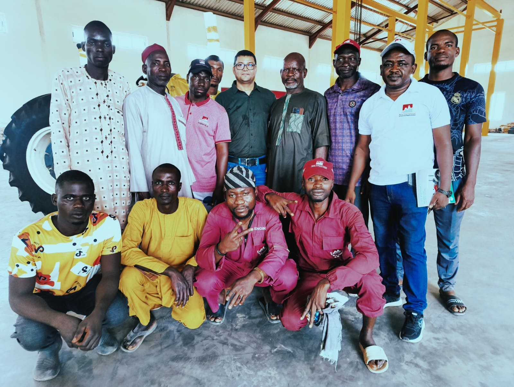
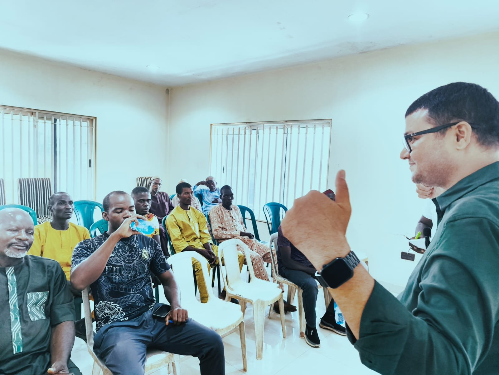
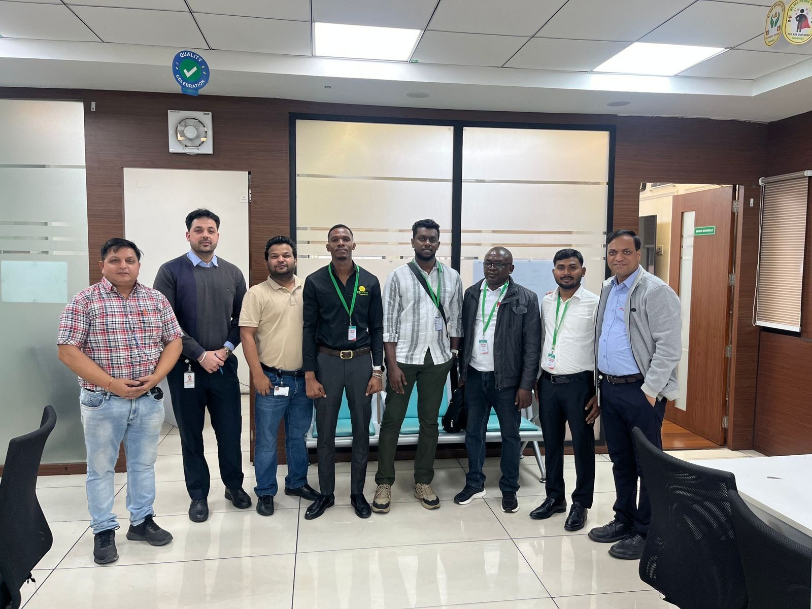

Twice Every Year
Sessions hold every second week of April and the third week of November, every year.
Mass International & Equipment provides training to tractor operators and mechanics on the optimum use of tillage machinery and equipment.

Mass International & Equipment Nig. Ltd provides training to tractor operators and mechanics on the optimum use of tillage machinery and equipment — covering the engine, clutch, gear box, differential and hydraulic systems from the ground up.
The training is conducted basically on Massey Ferguson and Swaraj tractors, as the principles taught are applicable to all other tractors. It runs every second week of April and the third week of November every year, and it is offered free of charge at this moment.
Sessions hold every second week of April and the third week of November, every year.
The training programme is being offered free of charge at this moment.
Conducted on Massey Ferguson and Swaraj tractors — applicable to all other tractors.
A hands-on programme that takes operators and mechanics through every major system of the tractor — construction, working, critical settings and troubleshooting.
Engine dismantling and reassembling covering all critical settings, timing adjustment and engine troubleshooting.
Construction and working of the clutch, types of clutch used in Swaraj, clutch overhauling and finger height adjustment.
Construction and working of the gear box and its critical settings, plus dismantling and re-assembling of the gear box.
Construction and working of the differential, dismantling and reassembling of the differential and its critical settings.
Hydraulic overview, the hydraulic circuit and hydraulic troubleshooting.
Basic training on mounting, operating and maintaining the full range of tractor-drawn implements.
Plough, Harrow, Ridger, Rotary Tillers and land levelling implements.
Tractor front dozer mounting and correct usage on the field.
All forms of planters and threshers, plus fertilizer broadcasting implements.

Training operations on other heavy duty machines are also conducted periodically.

Separate individual or group training may also be conducted based on internal arrangements. Our management can be contacted for personal training at any given time of the year.
Sessions hold every second week of April and the third week of November. Get in touch to register your operators and mechanics.